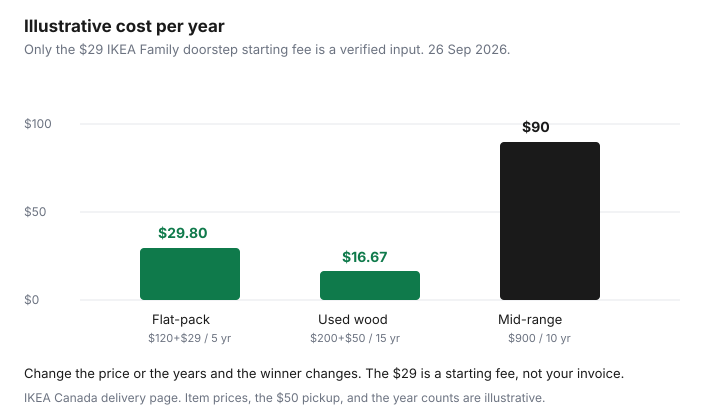

Household Items and Supplies · Canada
Cheap Furniture in Canada: IKEA vs Structube vs Wayfair vs Facebook Marketplace—Total Cost Compared
A $149 bookcase that needs a $99 truck and a Saturday of assembly is not a $149 bookcase. The useful number is the price, plus delivery, plus assembly, minus whatever you can sell it for later, divided by the years it stays in the room. Years are yours to fill in. This page will not invent a lifespan.
How the piece fits a small apartment is the space guide. Hunting listings without the rental scams is the Kijiji guide. Clearing a room before a move is the declutter guide. Paying for a storage locker instead of a larger lease is the storage guide. This page is where to buy, and what the total costs.
Key takeaways
- Write shelf price, delivery, assembly, and a resale guess. Divide by years you choose. The formula is the comparison.
- IKEA Family doorstep delivery starts at $29. In-home starts at $49 for members and $59 otherwise. Assembly starts at $45. Checked 26 Sep 2026.
- Sell-back is IKEA Family credit after an in-store look, not cash, and it excludes sofas, mattresses, and bed frames.
- Structube: free doorstep over $299 before tax inside the zone, plus $50 before tax for room-of-choice. Wayfair.ca: $8.99 under $50, and free at $50 and over, with per-item exceptions.
- Canada’s counter-tariffs from 12:01 a.m. on 8 September 2026 include furniture and appliances at rates that depend on the tariff item. Check the origin before you treat a U.S.-made sofa as last month’s price.
True cost of flat-pack: price + delivery + assembly + lifespan
Flat-pack wins when you can carry it, build it, and keep it. It loses when the delivery tier jumps because one carton is over the parcel limit, or when the piece wobbles in year two and you buy it again. IKEA’s own delivery page says it does not hide a permanent “free” service inside the price. The fee is printed. Use that habit everywhere else too. A “free delivery” line that excludes your postal code is a fee with a friendlier name.
Assembly is either your time or a bill. IKEA’s Taskrabbit page starts assembly at $45, as a flat rate based on the products, and says wall-securing that is in the instructions is included. Electrical and plumbing are not. Furniture removal paired with that service is marked available in the Greater Toronto Area only. If you build it yourself, the cost is the evening, not zero, but this page will not invent an hourly wage for you. Put your own number in the worksheet if the evening matters.
Lifespan stays a reader column. A solid-wood desk can outlast a particle-board desk, and it can also be water-damaged on day one. The used-goods guide is the inspection. For the math, pick a year count you believe and write it down. Change the years if the piece fails sooner. The point of the formula is that a second purchase shows up. A single shelf price never does.
IKEA Canada: As-Is, Sell-back credit, and delivery tiers
Delivery, on the services page checked 26 Sep 2026, needs a minimum order of $29 before taxes, delivery, and other services. Parcel delivery starts at $9.99. The parcel rules on the help article: each article 23 kg or less, the order 30 kg or less, no single article over 120 cm, no P.O. boxes, and not for mirrors, mattresses, mattress toppers, cooktops, microwaves, or hoods. Truck delivery starts at $29. For IKEA Family and IKEA Business Network members, doorstep starts at $29, curbside at $99, and in-home at $49. In-home starts at $59 if you are not a Family member. The postal code at checkout overrides the “from” price. Bulk orders can cost more. Click-and-collect is the alternative when the truck is the expensive part and the store is close.
Sell-back, on the circular page checked the same day, is for IKEA Family members. You submit the piece, check back in about three to five days, and if it is approved you bring it in assembled within 30 days. Staff inspect it and can offer a different credit than the estimate. The credit is an IKEA refund card for store or online purchases, not for food. The piece has to be complete, clean, unmodified, and still have the original sticker. Products more than 10 years past their end-of-sale date are out. So are non-IKEA goods, outdoor furniture, glass, kitchens, appliances, children’s cribs and mattresses, PAX, bed frames, mattresses, fabric sofas and armchairs, and upholstered fabric chairs. All Canadian IKEA stores take part. Design studios and pick-up locations do not. As-Is is where that furniture is sold again, in the store. There is no national As-Is price list. The tag on the floor is the price.
Sell-back is not a promise of half your money back. The current page does not publish a percent of the original price. If an older article in your memory says 50 percent, ignore the memory and read the estimate. A piece IKEA will not buy back still has a Kijiji price, after you have read the scam notes in the used-goods guide.
Structube, Wayfair.ca, Walmart, and Leon's/The Brick compared
Structube’s delivery page, checked 26 Sep 2026, says free doorstep delivery applies on orders over $299 before tax, with conditions, in most major cities inside a free-delivery zone. Outside that zone, extra fees apply. Room-of-choice delivery is an additional $50 before tax, and only inside the free doorstep radius. You select it at checkout. You cannot pay the driver that $50 on the day. The FAQ says sales tax applies to delivery fees, and a missed appointment while the goods are in transit can mean another delivery fee. Orders outside Quebec and Ontario can take up to 14 business days to reach the transporter. The delivery window is a four-hour block between 7 a.m. and 10 p.m., confirmed the day before. Assembly is not a national fee on that page. Budget your own build, or ask the store.
Wayfair.ca’s shipping page, checked 26 Sep 2026, lists standard shipping at $8.99 on orders under $50 and free at $50 and over. The same chart says some products carry a per-item or per-order shipping charge, shown in the cart. Remote postal codes can add a surcharge when you enter the code. Import duties, where they apply, are described as included in the item price. The page says Wayfair does not ship to P.O. boxes, and it does not promise weekend delivery. “Free shipping over $50” on a marketing page is the chart above, plus the exclusions. Open the cart.
Walmart.ca did not publish one furniture delivery dollar on a page we could use as a national rate. Use the listing. Leon’s delivery page says a restocking fee may apply if an unwrapped piece does not fit, and a dryer product page advertised free local delivery on orders over $799. The Brick’s shipping page says delivery is free on orders of $499 and over in Quebec only. Other addresses get a postal-code estimate. Out-of-town Brick delivery places the item in the room and leaves unpacking and assembly to you, and it does not remove old appliances or mattresses. The Brick does not remove old furniture. Habitat ReStore is the donation path the removal page names, and a donation receipt is a conversation with the charity, not a discount at the till.
One trade note, because it can change a sticker without changing the brand. Finance Canada’s backgrounder says counter-tariffs take effect at 12:01 a.m. on 8 September 2026, at 15, 25, or 50 percent depending on the product. The same announcement lists furniture among goods at the 50 percent rate and appliances among goods at the 25 percent rate, with the rate set by the tariff item on the product list. Check the origin of a sofa or a dining set. A Canadian-made piece is a different case from a U.S.-origin piece on that list. This is not legal advice. The list is the official page.
Used: Facebook Marketplace and Kijiji for solid-wood pieces
Used solid wood is the comparison that makes a flat-pack look expensive per year, when the wood is sound. Look at joinery, wobble, and the underside. Water stains, a soft particle-board back, and a smell you cannot name are reasons to walk. The inspection, the bed-bug check, and the e-Transfer rules are the used-goods guide. A CBC News report on 16 July 2025 described Montreal sellers receiving fake e-Transfer links. That risk is part of the price of a cheap dresser. A dresser you drive across the city to see, and pay for in person after you have lifted it, does not have that link in the transaction.
Price the pickup. A $40 table that needs a rental van and a second adult is not $40. The movers guide is the method for that van. Measure the stairwell before you pay, the same way you would before an IKEA delivery. Leon’s restocking warning exists because people skip that step with new furniture too.
When to spend more: sofas, mattresses, desk chairs
Spend more where your body stays for a long time. A sofa that collapses is a second sofa. IKEA’s sell-back list already refuses fabric sofas, so the resale plan for a cheap sofa is weak. A mattress has its own trial clock in the mattress guide. Do not buy the cheapest mattress to save the frame budget. A desk chair is the same idea: sit in it, and prefer a return window long enough to know whether your back agrees. A bookcase, a plain desk, and a dining table are the pieces where used wood or a careful flat-pack is enough.
Spending more is not a brand ladder. It is a longer warranty you have read, a delivery you can be home for, and a piece you can still use if you move. If the move is likely inside a year, the storage guide may beat a new sofa. Buy the sofa for the apartment you will still be in.
Cost-per-year table and a buy/skip checklist
Formula: (shelf price + delivery + assembly − resale or sell-back) ÷ years. Shelf price and years are your figures. Delivery below is the published starting rule, not a quote for your postal code.
| Source | Delivery rule | Assembly | Resale | Watch-out for sofa, bookcase, bed frame, desk, dining set |
|---|---|---|---|---|
| IKEA | Parcel from $9.99 if it qualifies. Family doorstep from $29. In-home from $49 (member) or $59. Curbside from $99 for members. Minimum order $29 before fees. | Taskrabbit from $45. Or you build it. | Sell-back credit for eligible hard pieces. Not sofas, bed frames, or mattresses. | Bookcases, desks, and many tables can be sell-back candidates. A sofa or bed frame is not. Parcel limits knock a mattress and some large cartons onto the truck price. |
| Structube | Free doorstep over $299 before tax inside the zone. Room-of-choice +$50 before tax inside that radius. Outside the zone, both rise. | Not a national published fee on the delivery page. Your time, unless the store quotes one. | No sell-back program found on that page. Resale is whatever a buyer pays. | A dining set can clear $299 and ride the free doorstep. A single small item under $299 pays freight. Tax sits on the delivery fee. |
| Wayfair.ca | $8.99 under $50. Free at $50 and over, except per-item charges and remote surcharges shown in the cart. | Not in the shipping chart. Read the product page. | No Canadian sell-back on the shipping page. Use the return window on the item. | A bookcase marked free shipping can still show a per-item charge. Duties are described as included. The cart is the check. |
| Walmart | The listing. No single national furniture fee used here. | The listing. | The listing’s return window. | Marketplace sellers set their own freight. A store pickup can erase it if the carton fits in the car. |
| Leon's / The Brick | Leon’s product page: free local delivery over $799. The Brick: free at $499 and over in Quebec only. Other Brick fees are a postal-code estimate. | Out-of-town Brick delivery leaves assembly to you. In-home assembly is a quote. | The Brick does not remove old furniture. Donation is separate. | A dining set may clear the free-delivery line. A desk under the line may not. Restocking can apply at Leon’s if it does not fit the doorway. |
| Used (Marketplace or Kijiji) | Your pickup. No seller fee schedule. | Usually none. You move it. | You set the next price. IKEA stickers still matter if you later try sell-back, and only for eligible categories. | Best fit: solid-wood bookcase, desk, dining table. Weak fit: sofa, mattress, anything upholstered you cannot inspect. |

Worked illustration, labelled as such. Flat-pack bookcase: an illustrative $120 shelf price plus IKEA Family doorstep from $29 is $149. Over an illustrative 5 years, with no sell-back, that is $29.80 a year. Used solid wood: an illustrative $200 plus an illustrative $50 pickup is $250. Over an illustrative 15 years, that is $16.67 a year. Mid-range new: an illustrative $900 with delivery treated as included in that $900, over an illustrative 10 years, is $90 a year. Change every input except the $29 and the chart changes. The $29 is a starting fee, not your invoice.
Buy when the formula, using your years, beats replacing it twice. Skip when the piece is a sofa, mattress, or desk chair you have not sat in. Skip sell-back plans for categories IKEA lists as refused. Skip a U.S.-origin seating purchase until you have checked the 8 September 2026 tariff list for that item. Skip a Marketplace deal you cannot inspect. Buy the bookcase, the desk, and the dining table used when the wood is dry and the stairs work. Buy flat-pack when the parcel tier really is $9.99 and you will build it this weekend.
Sources & date stamps
- IKEA Canada Sell-back page, delivery services page, parcel help article, and Taskrabbit assembly page, checked 26 Sep 2026.
- Structube shipping and FAQ pages, checked 26 Sep 2026. Free doorstep over $299 before tax in zone. Room-of-choice $50 before tax.
- Wayfair.ca shipping information page, checked 26 Sep 2026. $8.99 under $50. Free at $50 and over, with exclusions.
- Leon’s delivery page and a product-page delivery line. The Brick shipping and removal pages. Checked 26 Sep 2026.
- CBC News, 16 July 2025: fake e-Transfer links aimed at Montreal Facebook Marketplace sellers.
- Department of Finance Canada backgrounder: counter-tariffs effective 12:01 a.m., 8 September 2026. Furniture cited among 50 percent goods, appliances among 25 percent goods, rate by tariff item.
Frequently asked questions
Is IKEA cheaper once delivery and assembly are counted?
Only after you add the fees for your postal code. On the delivery page checked 26 Sep 2026, parcel delivery starts at $9.99, Family doorstep at $29, in-home at $49 for members and $59 otherwise, and curbside at $99 for members. Assembly through Taskrabbit starts at $45. A shelf price that skips those lines is not the cost the checkout will show.
How does IKEA Sell-back work in Canada?
IKEA Family members apply online, get an estimate in about three to five days, and bring the assembled piece in within 30 days if it is approved. The store can change the estimate, and you receive store credit, not cash, which cannot be spent on IKEA food. Sofas, mattresses, bed frames, PAX, and upholstered chairs are refused. All Canadian IKEA stores participate, while design studios and pick-up points do not.
Is Structube good value?
It can be, inside the free-delivery zone, if you assemble the piece yourself. Doorstep delivery is free on orders over $299 before tax in that zone, and room-of-choice delivery is an extra $50 before tax inside the same radius. Outside the zone both cost more, tax applies to the delivery fee, and a missed window can mean another charge. Value is that total divided by the years you keep it.
What furniture is worth buying used?
Solid wood you can inspect in daylight: bookcases, desks, dining tables, and dry dressers. IKEA will not buy back a sofa, a mattress, or a bed frame, which is a clue that soft and sleep pieces are weak resale. Upholstered pieces need the bed-bug inspection in the used-goods guide. Skip anything you cannot lift, measure, or see underneath.
When is it worth spending more?
Spend more when you use the piece for hours and a failure means buying it again: a sofa, a mattress, and a desk chair. A bookcase for paperbacks can stay a careful flat-pack or a used wood piece. The mattress decision has its own trial clock. Spending more means a longer return window and a base you have sat in, not a brand rank.